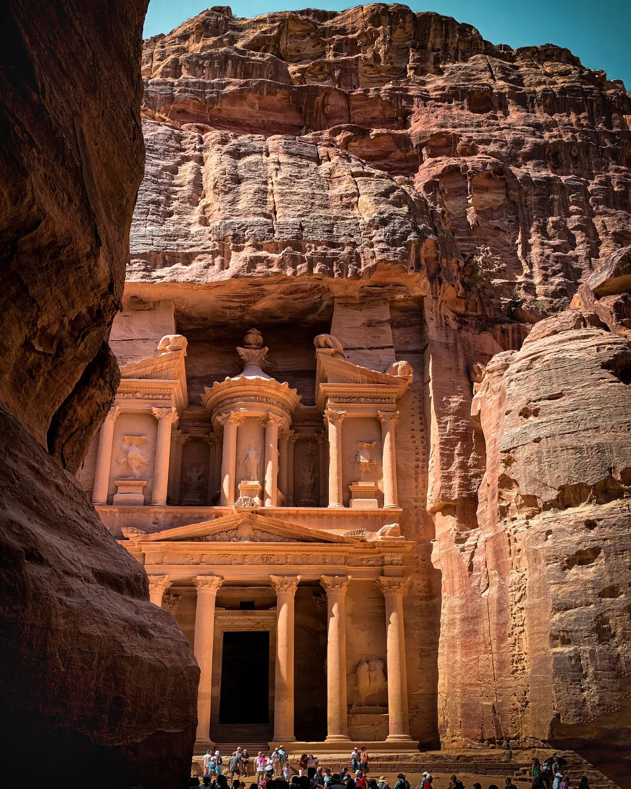
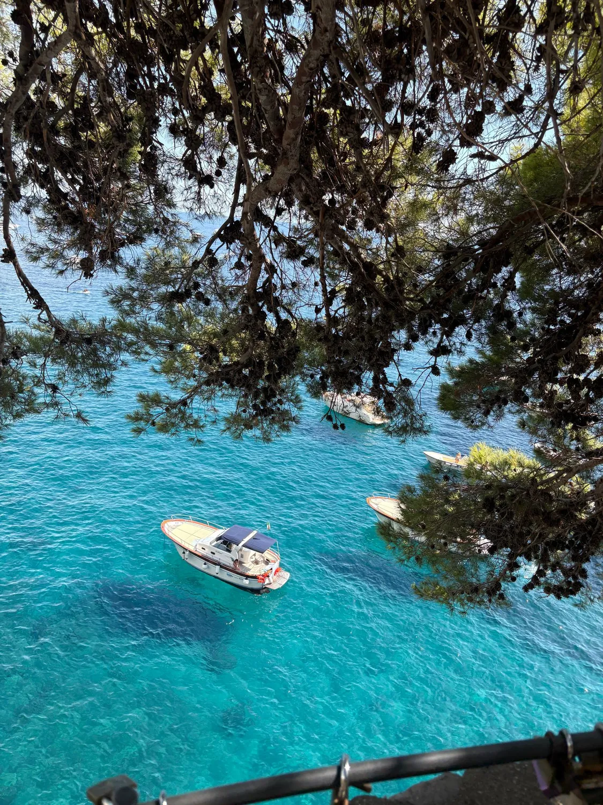
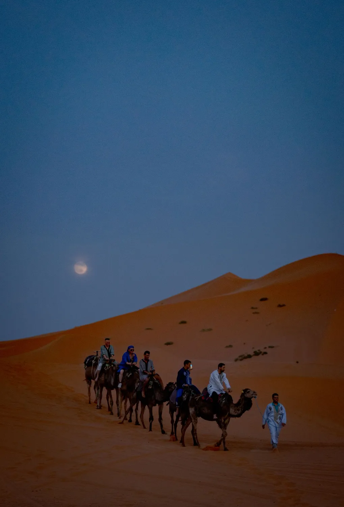
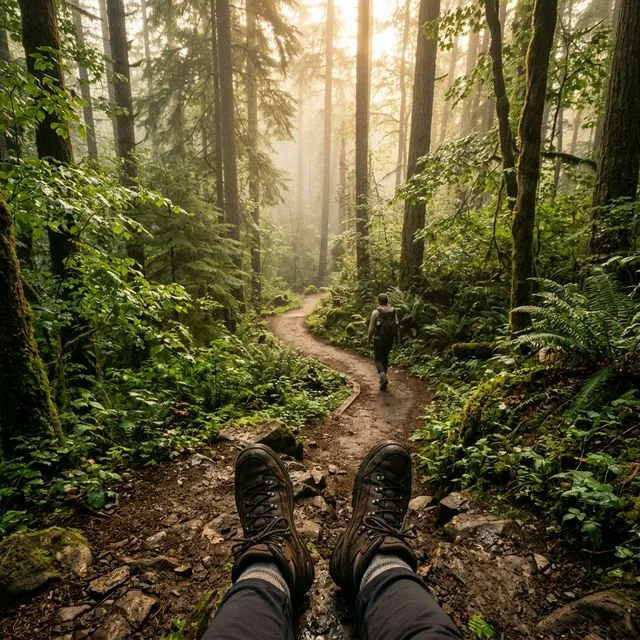
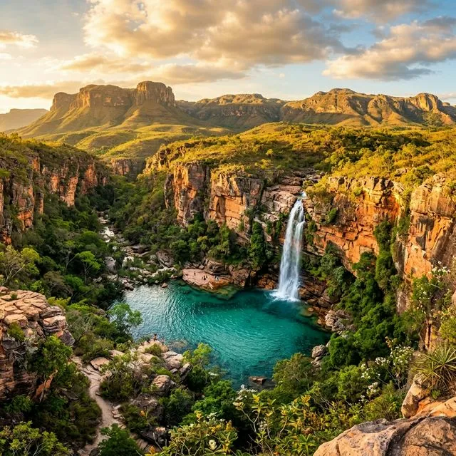
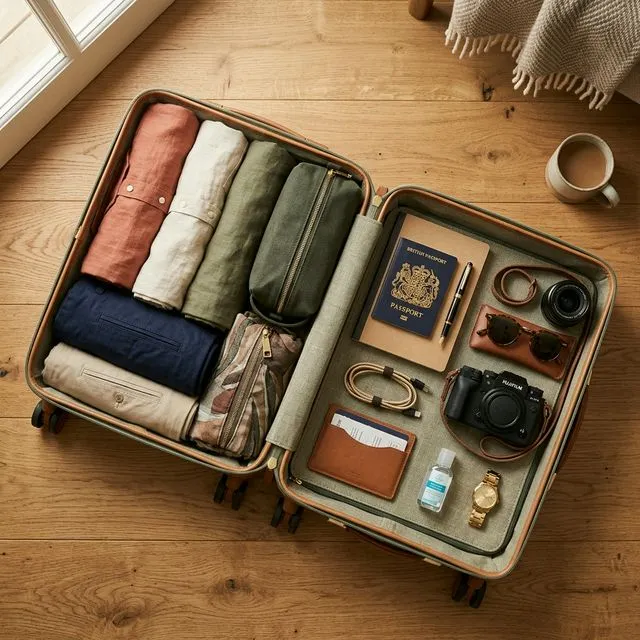

Diário de Bordo
Histórias que inspiram partidas
Guias, bastidores e inspiração para transformar vontade de viajar em próxima viagem.
Guias, bastidores e inspiração para transformar vontade de viajar em próxima viagem.
 Dicas em Destinos
Dicas em Destinos
A experiência transformadora de dormir em lodges exclusivas no deserto mais árido do planeta.
Leia maisA janela certa, quantos dias reservar e a decisão entre lado chileno e argentino.
Leia mais
Destinos IncríveisComo atravessar o Siq no silêncio e ver o Tesouro antes que o dia comece.
Leia mais
Experiências ÚnicasPor que trocar a estrada pelo mar muda completamente a experiência na Campânia.
Leia mais
Dicas em DestinosO país inteiro cabe em dez dias, e a medina é só o começo da história.
Leia maisCobertura mínima, letras miúdas e os erros que só aparecem quando você precisa acionar.
Leia maisAlta, baixa e a temporada de ombro, o segredo de quem viaja bem gastando menos.
Leia mais Destinos Incríveis
Destinos Incríveis
Pistas imaculadas, gastronomia estrelada e chalés aconchegantes no coração pulsante dos Alpes Franceses.
Leia mais
Dicas para ViajantesEquilibrando descanso, aventura e logística para avós, pais e netos sem perder o fôlego ou o encanto.
Leia mais Destinos Incríveis
Destinos Incríveis
A eterna dúvida do Oceano Índico: bangalôs sobre as águas ou enormes rochas de granito cercadas por tartarugas.
Leia maisO charme da Era Dourada das viagens ressurge sobre trilhos através da Europa em cabines de laca e cristal.
Leia mais Dicas para Viajantes
Dicas para Viajantes
Entenda por que tons neutros e tecidos tecnológicos são seus melhores amigos na África.
Leia mais Dicas em Destinos
Dicas em Destinos
Descubra como uma pequena cidade litorânea no País Basco concentra a maior densidade de estrelas Michelin do mundo.
Leia mais Bem-estar
Bem-estar
A medicina alpina do futuro aliada à pureza das paisagens lacustres forma o verdadeiro epítome do luxo em saúde.
Leia mais Destinos Incríveis
Destinos Incríveis
Flutue serenamente entre as fadas de chaminé na Turquia num dos cartões postais alados mais belos do mundo.
Leia mais Destinos Incríveis
Destinos Incríveis
A reabertura suntuosa do coração da Eurásia atrai viajantes experientes em busca das madrasas com mosaicos.
Leia mais Dicas em Destinos
Dicas em Destinos
Planeje a viagem perfeita para ver o maior espetáculo de luzes da natureza no ártico islandês.
Leia mais Dicas para Viajantes
Dicas para Viajantes
Entenda as práticas que fazem da sua viagem uma força de proteção cultural e ambiental ao redor do planeta.
Leia mais Dicas em Destinos
Dicas em Destinos
Um roteiro hedonista pelo melhor do enoturismo aos pés da majestosa Cordilheira dos Andes.
Leia mais Dicas para Viajantes
Dicas para Viajantes
Não leve peso morto. Aprenda a técnica das três camadas para se manter aquecido nos climas mais gelados do planeta.
Leia mais Destinos Incríveis
Destinos Incríveis
Tóquio de néon, pacíficos templos xintoístas em Kyoto e a majestade do Monte Fuji nesta imersão absoluta do Japão.
Leia mais Destinos Incríveis
Destinos Incríveis
Saia do ritmo mecânico das maratonas turísticas e passe a viver a Europa e suas pequenas vilas no compasso que elas requerem.
Leia mais Destinos Incríveis
Destinos Incríveis
Pensando na lua de mel perfeita? Descubra propriedades de ultraluxo nas Maldivas, Seychelles, Polinésia Francesa e mais.
Leia mais Dicas para Viajantes
Dicas para Viajantes
Guia completo de planejamento para fotografia de vida selvagem. Equipamentos, destinos ideais e dicas de profissionais.
Leia mais
Dicas em DestinosUm checklist completo com tudo que você precisa colocar na mala para aproveitar ao máximo esse paraíso do cerrado brasileiro.
Leia maisEstá pensando em fazer sua primeira trilha? Confira nossas dicas essenciais para uma experiência segura e prazerosa.
Leia mais
Dicas para ViajantesTécnicas de organização, lista de essenciais e dicas de quem viaja o mundo para otimizar cada centímetro da sua mala.
Leia mais